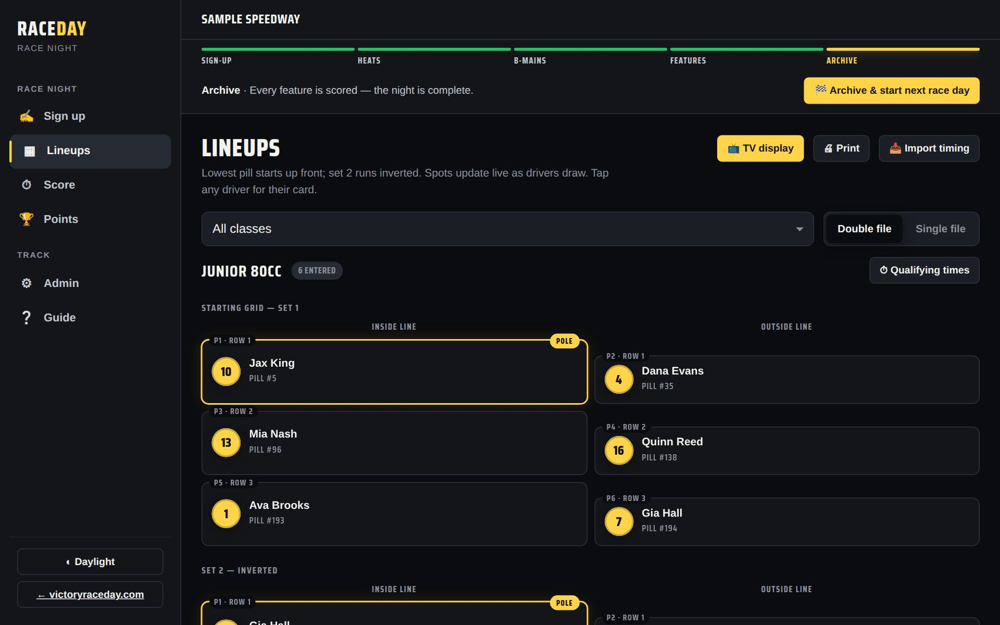
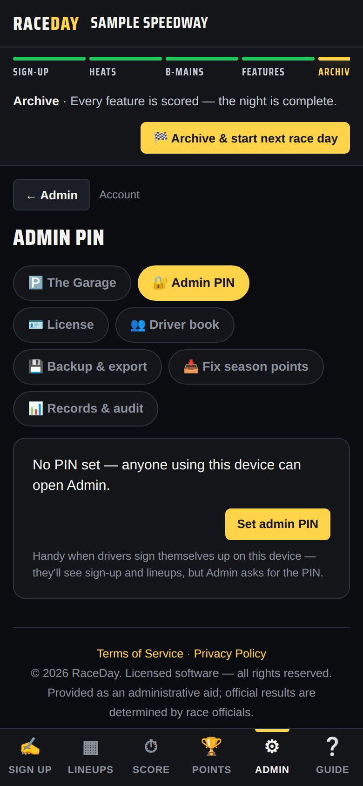

-
Use a laptop or tablet
Open RaceDay and finish first-time setup. Out of the box this device is the admin and sees every tab: Sign up, Lineups, Score, Points, Admin and Guide.

Everything on one screen -
Add it to the home screen (optional)
On an iPad or iPhone, tap Safari's Share button → Add to Home Screen. In Chrome, use the install icon in the address bar. It then opens like an app and works offline.
-
Sign-up, then scoring
Keep the device at the sign-up table while drivers sign in, then take it to wherever you score. Or have one person type everyone in from the Sign up tab.
-
Put lineups on a TV
Connect the device to a TV (HDMI cable or screen mirroring), then tap 📺 TV display on the Lineups tab. It goes full screen and cycles lineups, results and points. Tap the screen for controls; ✕ Exit closes it.

TV display -
Print for the pits
🖨 Print on the Lineups tab prints lineups, a pit board, results, or points on plain paper.
-
Lock Admin
If drivers will tap through sign-up on this device, set an Admin PIN (Admin → Account → Admin PIN) so they can't wander into settings.

Admin PIN -
Back up after each night
Everything lives on this one device, so download a backup when you archive each night — see End of the night.
Good to know
- No internet needed for sign-up, lineups, scoring, points, TV, or printing.
- These need internet: fans following on their phones, extra devices, cloud backup, and Driven profiles.
- Want fans to follow along, or a separate scoring tablet? See Multiple devices.
Next guides
Still stuck? The Field Manual walks through every screen, and the FAQ covers common questions. Or just ask.
Email a question →